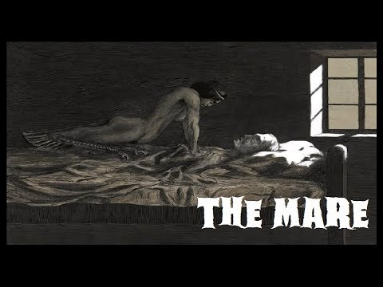

The Mare (Part 2)
Sleep paralysis goes hand in hand with this legend. As Sleep paralysis is a temporary inability to move or speak that occurs when you're waking up or falling asleep. It's not harmful and should pass in a few seconds or minutes, but can be very frightening. Often, people with frequently occurring nightmares find themselves often .Awake. in their dream however unable to physically wake up.
Researchers believe sleep paralysis is caused by a disturbed rapid eye movement cycle because it mostly happens as people are falling into or coming out of REM sleep. During that stage, their brains normally paralyze their muscles anyway -- so they don't act out their dreams. But during sleep paralysis, the sleeper is awake, or half awake, and so is aware she cannot move.
If you are feeling unsafe, chant this verse
| German | English |
|---|---|
| Hier leg' ich mich schlafen, | Here I am lying down to sleep; |
| Keine Nachtmahr soll mich plagen, | No night-mare shall plague me |
| Bis sie schwemmen alle Wasser, | until they have swum through all the waters |
| Die auf Erden fließ | that flow upon the earth, |
| Und tellet alle Sterne, | and counted all stars |
| Die am Firmament erscheinen! | that appear in the skies. |
| [Dazu helfe mir Gott Vater, Sohn und heiliger Geist. Amen!] | [Thus help me God Father, Son, and Holy Ghost. Amen!] |